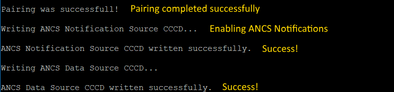

The ANCS Client demo application is designed to work with a peer mobile
device which exposes the ANCS service. Also, a serial terminal application is required
for displaying ANCS Notifications information.
- Open a serial terminal application on the PC and connect it to the
serial port corresponding to the board on which the ANCS Client runs. See the
details in Section 5.1.3, "User Interface". A start screen is displayed immediately
after the board is reset. All LEDs should be flashing.
- Press the ADVSW to start advertising. This instruction is also
displayed in the serial terminal as shown in the screenshot above.
- The peer device starts scanning for Bluetooth LE devices and connect to
the ANCS Client device which is advertising.
- Once connected to a peer the application, it looks for the ANCS Service
and its characteristics. If they are found, the ANCS Client tries to register for
receiving notifications.
- If any security related ATT errors are encountered than the application
automatically performs Pairing and Bonding and retries the failed ATT operations.
Depending on the negotiated Pairing Method, user interaction may be needed to
complete the Pairing. Follow the on-screen instructions provided by both the ANCS
Client and the mobile device. If a passkey is to be generated by the ANCS Client
then the default 999999 passkey is used.
- After bidirectional communication is established via GATT the ANCS Client will start
displaying ANCS Notifications information as shown below.